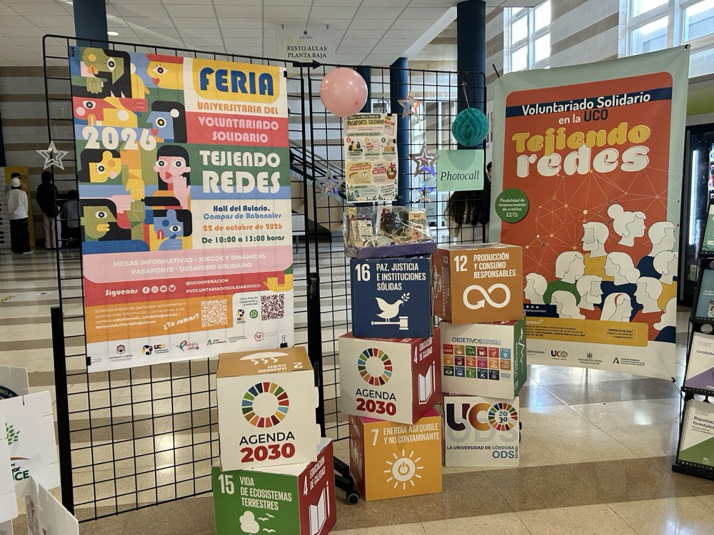

La Red Española Contra la Trata de Personas (RECTP)1 alerta de que estamos en un
momento clave en el ámbito europeo, con la reforma de la Directiva contra la trata y, en el
ámbito estatal, en el marco de la nueva legislatura, para seguir avanzando en el abordaje de
la trata como violación de derechos humanos, a través de una Ley Integral.
El 18 de octubre se conmemora el Día Europeo contra la Trata de Seres Humanos y aún
son muchos los retos para lograr actuar frente a esta nueva forma de esclavitud del siglo
XXI. Según los informes publicados por la oficina de estadística de la UE, Eurostat, más de
7.000 personas son víctimas de la trata de seres humanos en la UE. La mayoría de las
víctimas registradas son mujeres y niñas (68% del total), y la explotación sexual es la forma
de trata predominante (56%). Por otro lado, el Grupo de Expertos en la Lucha contra la
Trata de Seres Humanos (GRETA) señala que la trata con fines de explotación laboral ha
pasado a ser la principal manifestación de la misma en un número creciente de Estados
europeos, representando más del 50% de las víctimas identificadas en países como
Bélgica, Letonia, Malta, la República de Moldavia, Portugal y el Reino Unido.
En el caso de España, según el Balance Estadístico 2018-2022 sobre Trata y Explotación
de Seres Humanos en España, en el año 2022, se identificaron un total de 6.655 personas
en riesgo de trata y explotación sexual (un 41,48% más respecto al año anterior) y 15.711
trabajadores y trabajadoras como potenciales víctimas de situaciones de trata y/o
explotación laboral (un 13,55 % más que en 2021). Sin embargo, estos datos sólo reflejan la
punta del iceberg. Según la Oficina Contra las Drogas y el Delito de Naciones Unidas, por
cada víctima identificada existen veinte más sin identificar. Este número se incrementa si
tomamos en cuenta los datos suministrados por las entidades sociales que se encuentran
trabajando directamente en los contextos de explotación.
Y nos encontramos en un momento clave, tanto a nivel europeo como estatal, para
avanzar en la generación de marcos más amplios de derechos para las víctimas de trata.
De un lado, el Consejo Europeo ha expuesto la necesidad de avanzar en este sentido
impulsando, en diciembre de 2022, el proceso de reforma de la Directiva europea de lucha
contra la trata. De otro lado, a nivel estatal, durante la anterior legislatura, se impulsó el
proceso de anteproyecto de Ley Integral contra la trata y explotación que quedó paralizado
con la disolución de las cámaras. Desde la RECTP se ha participado en ambos procesos
ofreciendo las propuestas generadas desde la experiencia y especialización en el trabajo
directo con víctimas y potenciales víctimas. En ambos casos, se ha señalado la importancia
de avanzar en normativas que tengan un enfoque de derechos humanos, infancia,
discapacidad, interseccionalidad y género, donde se prime la prevención, detección,
intervención y atención a las víctimas, frente a una actuación centrada prioritariamente en la
persecución del delito, reforzando para ello la colaboración con las entidades sociales
especializadas que atienden de forma directa.
Respecto a la reforma de la Directiva Europea, en marzo de 2023, la RECTP mantuvo
reuniones con la Coordinadora contra la Trata de personas de la Unión Europea, Diane
Schmitt, para hacerle llegar las propuestas elaboradas por la plataforma relativas a la
modificación de la Directiva. La RECTP expresó su preocupación por mejorar los procesos
de detección e identificación, de manera que permitan contar con la participación directa de
las entidades sociales especializadas que intervienen con víctimas y potenciales víctimas.
Con el objetivo de mejorar la identificación y protección, se señaló la relevancia de articular
vías seguras para la denuncia que impidan la imposición de sanciones –como la expulsión–,
o la necesidad de acceso a vías para la residencia legal para las víctimas en situación
administrativa irregular, las cuales representan un alto porcentaje debido al habitual carácter
transnacional del delito de trata de seres humanos.
Por su parte, España ostenta actualmente la Presidencia del Consejo de la Unión Europea.
Entre sus asuntos principales y resaltados por su particular relevancia durante tal periodo,
se encuentra el “acabar con la trata”. A pesar de que desde el Gobierno se han adoptado en
los últimos años algunos instrumentos en materia de lucha contra la trata, como el Plan
Estratégico Nacional contra la Trata y la Explotación de Seres Humanos (PENTRA,
2021-2023) o el Plan Operativo para la Protección de los derechos humanos de las mujeres
y las niñas víctimas de trata, explotación sexual y mujeres en contextos de prostitución
(Plan Camino, 2022-2026), entre otros, nuestro país todavía no cuenta con un marco
jurídico coherente. La RECTP reivindica la necesidad de una ley integral contra la trata que
tenga rango de Ley Orgánica y consolide los avances que se han producido en este ámbito
en los últimos años y proporcione un marco de obligaciones estable, dotando de coherencia
al ordenamiento jurídico actual. Esta ley sería el instrumento adecuado para corregir
prácticas que imponen barreras y obstáculos al disfrute de los derechos humanos
reconocidos a las víctimas de trata. Así mismo, permitiría dar cumplimiento a las
obligaciones internacionales asumidas por España, en particular, el deber de actuar con la
diligencia debida.
Por todo ello, la RECTP insta al Gobierno a promover en el marco de la Presidencia
Española del Consejo de la Unión Europea la modificación de la Directiva que garantice la
protección de los derechos de todas las víctimas y supervivientes. Asimismo, pedimos a
todas las fuerzas políticas en España que asuman un compromiso sólido para seguir
avanzando en la lucha contra la trata y la explotación a través de la adopción en esta nueva
legislatura de una Ley integral desde la perspectiva de los derechos humanos, infancia,
discapacidad, interseccionalidad y género.
Contacto para prensa:
Laura Toronjo | comunicacion@proyectoesperanza.org | 696 792 236
*1 Entidades firmantes: A21, ACCEM, Amar Dragoste, Amnistía Internacional, Antena Sur contra la trata, APRAMP, Askabide,
Asociación Trabe, CÁRITAS, CEAR, Cruz Roja, DIACONÍA, FAPMI, Federación Andalucía Acoge, Federación Mujeres
Progresistas, FIET GRATIA, Asociación Nueva Vida, Fundación Amaranta, Fundación APIP ACAM, Fundación CEPAIM,
Fundación Cruz Blanca, Médicos del Mundo, Mujeres en Zona de Conflicto, Oblatas, , ONG Rescate, Programa Daniela –
Oblatas, Proyecto Esperanza, Save the Children, Themis, Villa Teresita.*